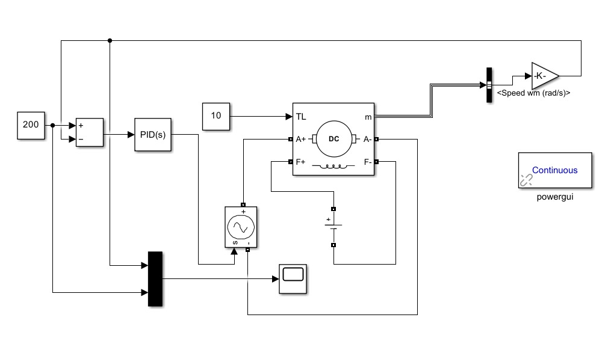
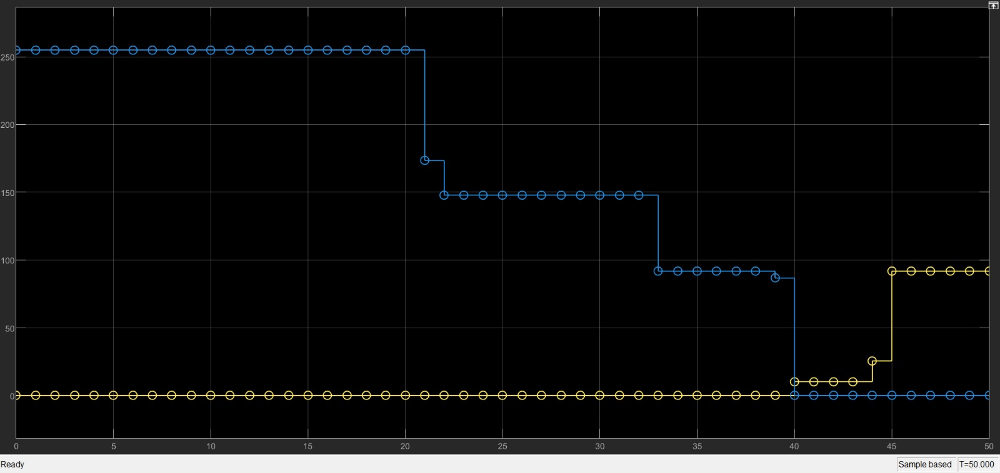

DC Motor Speed Control Without Encoder
Summary
What
Open-loop PWM motor drive on an Arduino, a derived motor model, and a simulated PID comparison in Simulink.
Role
Built an Arduino PWM drive for a DC motor, derived its electrical and mechanical model and simulated a PID loop in Simulink, in a team of 5.
Results
- Hardware: Arduino UNO, IBT-2 driver and a 5 V DC motor, with PWM on pins 5 and 6 and no encoder.
- Motor ODEs and a transfer function from voltage to speed derived.
- PID control exists in simulation only, where it reduced overshoot and removed steady-state error.

Problem
Design, model and test a low-cost DC motor speed controller without an encoder. Open-loop PWM sets the speed, and the study points to supply and load sensitivity as the limit of open-loop control.
Method
- Hardware: Arduino UNO PWM outputs on pins 5 and 6 into an IBT-2 driver, a 5 V DC motor, a breadboard and a common ground, built from lab components at no extra cost.
- Model: coupled electrical and mechanical ODEs, then a Laplace transform to a transfer function from input voltage to speed, with torque proportional to current and back EMF proportional to speed.
- Simulink open-loop model using Arduino support blocks, then a closed-loop model with a PID controller added for simulation only.


Equations
- EQ. 1
Tm = Km ia; eb = Kb omega - EQ. 2
La dia/dt + Ra ia + Kb omega = ein(t) - EQ. 3
J domega/dt + b omega = Km ia - TL - EQ. 4
J domega/dt + (b + Km Kb / Ra) omega = (Km / Ra) Vin - EQ. 5
G(s) = Omega(s) / Vin(s) = (Km / Ra) / (J s + b + Km Kb / Ra)
Results
The open-loop Simulink scope shows a transient followed by a steady trend for the chosen PWM command. In the simulated PID response, speed first overshoots, then settles at the setpoint with steady-state error removed.


Limitations
- The PID controller exists only in simulation, and the hardware has no feedback or encoder.
- No motor parameter values, response times or measured speeds are given.
- Linear model that ignores friction variation, saturation and supply variation.
Tools
- Arduino
- Simulink
- MATLAB
- IBT-2